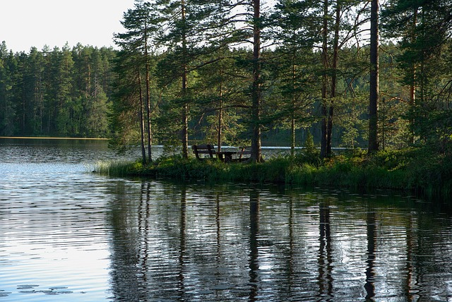

Finland
Finland, officially the Republic of Finland is a Nordic country located in Northern Europe which shares land borders with Sweden to the west, Russia to the east, and Norway to the north.
The main reason that I want to go to Finland is to visit an old friend. She is originally from Finland but came to America when she was just 5 years old. We first met when we were around 9 years old in school and became good friends for the two years that we were together. Although she did have to go back to her grandparents back in Finland I promised her that I would visit her at least one more time.
I heard from many people that Finland is a beautiful place to go to if you had a chance to visit the world.
A fun fact about Finland can include that The majority of the population lives in central and southern Finland with over 1.5 million people living in the Greater Helsinki metropolitan area, which produces a third of the country's GDP
Other fun facts about Finland can include that In 1809, Finland was annexed by the Russian Empire as the autonomous Grand Duchy of Finland, during which Finnish art flourished and the idea of future independence began to take hold. Also in 1906, Finland became the first European state to grant all adult citizens the right to vote, and the first in the world to give all adult citizens the right to run for public office.